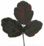
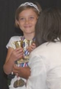
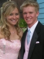
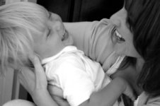
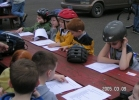
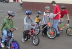
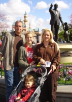
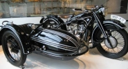
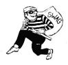
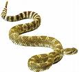

The Ongoing Saga
of Nial's Hair
After living hairy for long enough, Nial finally decided it was time for a haircut. "He and Bryce were in the bathroom for over two hours as they tried to cut each other's hair," reports Diana. "But it was worth it because now instead of looking like a Sasquatch, he looks just like a moooooovie star!"
Bigfoot
"Dallas wears size 15 shoes now!" raves his mother, Diana. "They're so big that a guy from the Portland Trailblazers saw his huge feet and gave him free shoes that were custom designed for one of the Blazers. Either that or he felt sorry for him because I only buy shoes from the thrift store since the boys outgrow them every few weeks. I thought Dallas had the biggest feet in high school but actually one boy wears size 18, but he is 6'8"!"
Twister Rips Columbus
North Columbus was plunged into darkness and chaos Thursday as a powerful storm swept across the city ripping roofs from homes and dropping trees. Officials in Columbus received numerous reports of a tornado delivering punishing blows to neighborhoods in the north of the city. Scott and Melanie were just two miles from major damage. Three homes belonging to members of their church were severely damaged, requiring major renovation. �We feel lucky no one was hurt because when you actually see the path of the tornado it looks devastating, like a bomb exploded with debris strewn everywhere,� said Melanie.
Steve on TV
"Steve was interviewed by several media freaks about his game NBA 07," says proud partner, Natasha. "Then he was on Spike TV. This all happened because Steve created the "Games of the Week" feature which has made the game such a huge success." Click Here to see him in action.
First 3rd Grader Kira Beal was the first third grader to read enough books to reach 100 points and get a balloon walk. A balloon walk is ceremony where great readers walk down the school halls with balloons while all the other students clap and cheer them on. Kira says, �I am very proud of myself and am encouraging all the other students to work hard like I did and get a balloon walk� But no one could match Kira's super-reading-powers and by the end of the year she was still the ONLY third grader to have tasted the glory of the balloon walk! Congrats Kira!
Kira Beal was the first third grader to read enough books to reach 100 points and get a balloon walk. A balloon walk is ceremony where great readers walk down the school halls with balloons while all the other students clap and cheer them on. Kira says, �I am very proud of myself and am encouraging all the other students to work hard like I did and get a balloon walk� But no one could match Kira's super-reading-powers and by the end of the year she was still the ONLY third grader to have tasted the glory of the balloon walk! Congrats Kira!
Eddie's B-day Bash
Edward, a self confessed chocoholic, recently turned 30 and celebrated with a surprise death-by-chocolate night! He had all his favorite chocolaty treats (and the list is extensive!) and ate until he couldn't touch another bite! A good time was had by all.
Poisoned - Again
"Dallas has poison oak again!" complains his twin brother, Weston. "We've all stopped counting how many times he's gotten it because it's been so many. I keep telling him that mullein is what you're supposed to wipe with when you're out in the woods, but I guess he just grabs whatever plant is handy!"
Out on A Limb
"Nial has been chopping limbs for us lately," says child-labor enthusiast, Diana. "He climbs up the tree and sits on the inside of the limb he wants to cut then as each massive limb falls it makes the tree spring back so hard that it's like he is riding a bucking bronco! It is wild to watch!"
Heavy Metal
The end of the year awards ceremony saw Kira sweep the Reflections awards. �Someone is going to have to help this girl down,� commented Principle Shaw-Powell as Kira teetered under the weight of three medals and four trophies.
Sophia Update
"It's all about Sophia right now," says proud mother, Shira. "She is the smartest little whippersnapper, ask anyone. I honestly think she may be the workings of a genius. And what a little beaut! Everyone seems to be charmed by her, especially her dad, and that attitude! Her favorite person of the moment is her dad, Jeremy. No one can tell Sophia what's what. Her favorite book of the moment is the complete works of Beatrice Potter, in particular, Peter Rabbit. She is a beans and rice junkie and loves kids. She calls all kids at the moment boys (regardless of their gender) due to an infatuation with a boy called Jose, who lives nearby. Her favorite movie and TV list is extensive, but includes Little Einstein (graciously donated by Tasha and Family), My Neighbor Totoro (a movie all parents with kids 18 months and up must check out!), Teletubbies (I am anxiously awaiting her to get bored with this one), Dumbo and Jungle Book. She's just a gem!"
Senior Prom
Ammon went to senior prom with his girlfriend, Haley. Before the dance they met up with a group of their friend's at the Cluff's house for a lovely dinner served by Dane and Karen. "We had a good laugh about some of the outfits the kids chose to wear this year," says Karen. After dinner the kids headed out to the prom, the girls dreaming of dancing the night away and the boys dreaming of getting away with a goodnight kiss!
Scriptureman
Weston has recently earned the distinction of being the #1 scriptorian in his entire seminary class (three people). Dallas came in 3rd. Weston recalls, "We had 25 D&C scripture masteries and I had memorized all but one. Finally, I memorized JSH verses 15-20 which is 2 1/2 pages of the first vision. I beat out a rival girl who memorized all but the first vision, and came in first in my seminary class."
Life Savers
Because they are on the swim team, twins Dallas and Weston volunteered to work lifeguard duty at the Emigrant Lake waterslides for DARE graduation day. They did such a fantastic job that they were singled out for praise by officer Bob who then dropped them off at home as a prize - or so they told their mother who was shocked, but not unused to seeing the boys come home in a police vehicle.
Old Uncle Arthuritis Comes to Visit
�Just before Mother�s day I spent three hours running the weed eater,� reports muscle weary Dennis. �Then Mom ran it for another four hours. The following day, we could hardly walk because of all the exertion. Luckily we had gotten Mom a hammock with a shade over it for Mother�s Day which I think she will both enjoy and need.�
Hot Rodder
"Dallas has been hot-rodding it up on the Dead Indian," complains his long suffering mother, Diana. "He's only 15 so he doesn't even have his license but I caught him taking the car up to the airport as fast as he could! I ran after him yelling 'stop!' but he didn't see me. When he zoomed back into the yard I ran after him to scold him but he quickly parked, hopped out and ran to his room. By the time I caught up to him he was in bed pretending to be asleep! He's very naughty!"
Locks of Love
"In May, Kira and her friend Jodi visited �Pigtails & Crew Cuts� to have their hair cut and then donated to �Locks of Love�. Now their hair will be used to provide hairpieces for children suffering from long-term medical hair loss. This helps restore children�s self-esteem and confidence. The girls had to have their hair pulled back in a ponytail, measured to ensure it was 10 inches long, and then cut. Each girl showed courage and made a personal sacrifice in order to serve others who are less fortunate than themselves. We are very proud of each of you girls: you are as beautiful inside as you are on the outside." The preceeding was an excerpt from a Primary newsletter.
Chicken Report
After a vicious, cannibalistic attack in the coop last quarter the chickens have returned to normal for now and are beginning to lay eggs again.
The Farmer
Dennis Report
"It sure is nice to have everything green again," says lover of green, Dennis. "Our garden is in and growing. Temperatures are up in the 80's and then back down to the high 50's... really feels good. The chickens are laying again, weeds are growing and the orioles are back. It must be spring!"
Got a problem or a question? The Cluff Family Times' lifestyle guru can solve all of your personal, romantic, financial, spiritual, decorating and fashion dilemmas. The answers are only a click away. Do you have a question for our agony aunt? Send it to: info@tuffcluff.com
WIN WIN WIN!
This is your LAST CHANCE to enter our prize giveaway contest (last time Dallas won 'The Incredibles' on DVD - mainly because he was the only one to enter the contest!). We really want your help in making the website a cooler place so PLEASE enter the competition (or at the very least force your kids to do it as a homework exercise in writing). We're looking for your worst traveling disaster stories for an upcoming feature article in the travel section. Send your horror stories to us here at Tuffcluff and the best/worst one will win the DVD of their choice!
Get-Togethers
Just in case you are unaware, family reunions for the Dennis and Diana Cluff family take place each year in Ashland on and around the Fourth of July. So make a permanent mental note then get yourself to The Homestead for the party!
Have Your Say
Don't agree with something we've said? Want to write an editorial? Have something to report? Want to see your article in print? It's easy! Just send your submissions and pictures via email to: info@tuffcluff.com
Next Issue
The Summer 2007 edition of The Cluff Family Times is HOT, HOT, HOT! Don't miss more crazy Cluff stories including; yet another pregnancy announcement, Ammon's graduation, Scott's big calling, the origin of the Cluffy word "Fluffy", Twins do the dirty bop, Diana's bamboo beating threats, Twins voices break and much more...
|
|
Kira�s Big Win
In Atlanta Kira and her Mother attended a reception where she learned that she had won first place for her photograph of her mom and brother. Her division included 3rd, 4th and 5th graders from across Georgia. Kira says, �It felt a little suspenseful. We walked into the museum and tried to find my picture in the gallery. There were so many pictures and people that it took us a few minutes to find my photograph. When we finally got close to it a woman picked it up and turned it over to read the back. She asked me if it was mine and when I said yes she told me that someday I would be a great artist! Then I saw a sign that said 1st place. I felt proud.� Kira's fantastic achievement was even reported in the local newspaper. A portion of the article appears below:
Local Students Win in 'Reflections' Competition
BY HARRY FRANKLIN
Two Double Churches Elementary School students are among 12 students in Muscogee County schools who are winners in the state Reflections competition sponsored by the Georgia Parent Teacher Association.
But they will have to wait until a 1 p.m. Sunday reception in Atlanta to learn which place they won.
Third-grader Kiriana Beal, 8, daughter of Scott and Melanie Beal, won at the district level in visual arts for a photograph and also has won at state.
"It's a picture of my mom and little brother Joseph, 3, sitting opposite each other and mother tickling my brother," she said, adding she took the photo last year. "They are both laughing." She can't wait to find out how she placed in state competition.
This is the 37th year the PTA has sponsored the Reflections competition for students in the arts from grades pre-K-12, said Dawn Small, Reflections chair for the Georgia PTA. Categories are judged by professionals in the state competition in the following categories: visual arts, photography, literature, musical composition, dance choreography and film and video production. Certificates, ribbons and some cash awards are presented.
The state PTA contest has first, second and third-place finishers per category, plus honorable mention if judges choose. Four winners per category will compete in the national Reflections competition. Some 30,000 students entered the Reflections contest at their local school level and the work of about 1,800 district winners went to state, Small said.
Ammz Eagle Project2
"Ammon has had the goal of becoming an Eagle Scout since he was 8 years old and began scouting," reveals his proud mother, Karen. "As time goes on, however, focus does change and goals even though important, get pushed to the back burner to wait for the right time. While sometimes these goals get left too long, they aren't forgotten. The same applies to Ammon's eagle project. Since he was busy 'pimpin' the women' in Vegas last summer, we left planning of the project too long. In December we decided to hold a blood drive. After we got it approved with the Red Cross we went on with the plans. Ammon wrote up the report and sent it in to the Eagle Board for approval but they denied the project saying it did not show enough leadership and not enough scouts were involved. We fought hard to get it, calling all we could think of to call and resubmitting the report but they would not budge. They said to cancel the drive and hold another one. I don't understand how that was supposed to help, but they thought it would make it better. Ammon said there was no way he was going to cancel because so many people were counting on us being there. Also there were lots people signed up to donate that were first time donors. So we held the blood drive and it was a huge success. Ammon donated blood for the first time along with several friends and even adults! We were able to potentially save 54 lives with the blood collected at his drive! However, since that one was just for fun, we had to come up with another project ASAP!! His scout leader and Ammz decided to put on a bike safety and preparedness fair where we all took part. We had stations set up for bike safety and 72 hr kits and also food storage. It went very well. He had lots of scouts helping out, children that came even from Myrtle Point, and around here. It was also a success that everyone enjoyed. You can rest assured that we are going to move Braden along much better than we did with Ammon."
Father Really Does Know Best
We hear the phrase all the time," says mother of six, Karen, "but how many of us dedicate ourselves to the knowledge that father knows more than we do. He has been around the block a few more times than us and his experience can be very useful. Ammon learned this lesson well on his way to his Eagle Board of Review April 26th 2007. Ammon had been practicing memorizing the scout law, oath, motto and the slogan for days and thinking of all the things he would have to say while being interviewed by the Eagle Board. It had been a very tense week for him and he was pretty nervous. The time finally came, last minute badges sewn onto his sash and with a borrowed scout shirt we were out the door. But Dane looks at him and says, "This is a formal occasion, you can't wear jeans!" Ammon looks at his fashionable jeans with the rips sewn and baggy to perfection and can't understand what the heck dad is talking about. "I look great! I AM dressed up!" Ammon says in his defense. He turns to me for some back up and I have to agree with Ammon this time. I thought he looked great too. He wasn't in athletic shorts, his hair was short, face clean and he even smelled good. But Dane wisely admonishes him he should be wearing slacks. Ammon and I look at each other, church pants, with a scout shirt, you have got to be kidding. So off we go in baggy jeans! The Eagle Board was hard. Question after question Ammon felt like he was on trial for his Eagle Project - and his whole scouting career for that matter. They ask us to leave the room so they can chat. Then 10 minutes later ask us to come back in. Brother LaTomme says, "Ammon, I have to admit that when you walked in here today I was not sure how badly you wanted this Eagle based on your appearance today. You come in here with your baggy jeans, neckerchief not rolled properly, ink on the back of your hand, I was just not sure how much this meant to you. Some good advice to you for your future, you need to realize you have to look the part." Well, Ammon did get his Eagle, but it was because of his honesty in his answers. You can imagine how great of a lesson this was to Ammon, and it can be a great lesson to all, even those mom's out there, listen to your DAD!"
|
Special Section: Cluff Girl's Update
|
Melanie: When You Wish Upon a Star�
"Last Monday when I took my kids up to Calloway to ride bikes," begins Melanie, "it was too soggy to ride, so we went to the vegetable garden. A man was there taking photos of the garden in the lovely overcast light. I asked him what camera he was using and he said, �A Nikon D200.� Now, I have a D100, which I love, but looking at his D200 - I wanted one! I walked away but couldn�t stop thinking about it, so I visualized myself with a D200. When Scott came home that night, I told him about my encounter with the new camera and said, �I can see myself with it, Scott.� He just laughed. Over the next few days he started saying that I should wait for my birthday whenever I said I was in the mood to take photos of the kids. I just couldn�t bear the suspense of thinking he might have ordered the camera for my birthday, but if he hadn�t I didn�t want to show any disappointment for whatever he did get me, so I broke him down and he confessed that �of course� I was getting a D200 for my birthday. He said I could open it as soon as it came. I ABSOLUTELY LOVE, LOVE, LOVE IT! Can you believe it? Exactly one week after imagining myself with a D200 I have one. Dreams really do come true."
Natasha: A Family Update
Since moving to San Diego, Natasha and her family are livin' the good life! Here, in an exclusive interview with Tuffcluff correspondent Cage Cluff, Natasha gives us the latest news:
TuffCluff: You�re the only one in the fam who has tried Law School so far. How is it going for you?
Natasha: "I thought it was a typo, but I got a 4.0 in my contracts class! Not too shabby for an aging first semester law student. Then I found out I made the Honor Roll and National Dean's List. I was as shocked as you are! I should be done with school this time 2009 and then I'll be studying for the bar exam in July. If I can pass that on the first try, then I'll probably take a quick vacation before I start real life. I think that Law School is actually really great though � something I can do for myself!"
TC: So are you and your family going to come up for the Fourth?
N: "I want to come out but I'm stuck with school this year until the end of July and then it starts again in August sometime. Maybe I�ll come up before autumn term starts�? "
TC: So have you gone on any memorable vacations around SD?
N: "We finally made it to Disneyland after living in California for over 3 years, and I don't feel too bad about waiting. It was Steve's first time (his parents deprived him of family vacations, let alone Disneyland) and he loved it. I made the mistake of taking Dru on Snow White's scary adventure early on...it was scary and every similar ride after that was scary to Dru. We learned that lesson. Toontown is the best for kids under 5 but Fantasyland has the best architecture, I think. We are going back (we got multi passes) and simply can�t wait. Dru is constantly asking us every weekend, "Can we ride on the BIG rollercoaster today?" Looks like she still remembers the trip."
TC: You mentioned Dru. Anything else surprising/funny happen with your little daughter at the happiest place on earth?
N: "Yes! We went on the Pirates of the Caribbean Ride (classic!) and afterward bought souvenirs at the Gift Shop. I got a little skull keychain and hooked it on my purse. Then, as we were riding on the train, Dru got a hold on my purse and found the skull and a bottle of Visine. She pretended the skull was her baby and started to feed it a bottle! (the Visine!)"
TC: Nice. So how�s the weather?
N: "It's perpetually sunny and warm here in vacation-land." (Natasha chuckles evilly)
TC: And your kids?
N: "Dru is a mega talker now, but understanding her is the challenge. She is fast, but not really articulate. Dru�s also learning Spanish. From her we�ve learned that "foochie" means �Stinky Little Pig", but we use it whenever someone in the fam has gas or any other bowl/digestive problem (it�s used often!!). Cage is still playing the bass and getting much better. She can play a lot of songs you hear on the radio. Maybe she'll start a real band someday. She plays with a guitarist but needs a drummer. Cage also just got a flat iron and is freaking out about how lovely straight hair can be (her hair is hopelessly curly like the George girls).
TC: You just turned 35, how does that feel?
"I feel like I'm pretty out of shape but at least my career is back on track (sort of - will be when I'm done in school). I do have a lot more energy and freakish enthusiasm than the other parents at Cage's school (her friends are jealous I'm so young compared to their moms!). That's kind of nice but I still feel like some things are harder."
TC: What about you and Steve?

N: "Steve's still saving the world from bad video games, one game at a time. Hopefully I won't flunk out of law school or resort to something even more desperate...used car sales! On my birthday Steve took the day off (very rare!) and we walked down the OB pier - I think it's the longest pier on the West Coast but I�m not sure. We also went to the beach and out to dinner. It was nice to avoid studying for finals for a day. Steve and I also came up a new word (sort of) it's an adjective; "gaff" from those guys who work on films. We were all excited when we saw it used in the way we use it in the paper the other day! (A gaffer is someone who is dorking out � a gaff is a mistake or blunder - gaffing is progressive acts of gaff). Try it - you'll get addicted! It just goes to show you how lame our social life is!"
TC: Nice! I�ll totally try it! Gaff� Gaff� Gaff�
Daisha: Celebrating Spring
"It's always really busy for us in the spring," says Daisha, "because we love to celebrate holidays and there are loads of them at this time of year. It's fun living in another country because you get twice the celebrations! In March there is British Mother's day, St. Patrick's Day, Edward's birthday, Tabitha's Birthday and St. David's Day (patron saint of Wales). There is also "Crufts" - a big dog show that all but one of us loves. No prizes for guessing who! In April there's April Fools Day (we got Dakota good this year!), my birthday, Easter, The Grand National, The Oxford and Cambridge Boat Race, The Queen's Birthday and St. George's Day (the patron saint of England). We also get a couple of weeks off for Easter so we normally try to go somewhere fun. This year we did a small trip to Exmoor but most of it was rained out. Ya gotta love that English weather! In May we've got Dakota's birthday, American Mother's Day (I always try to make Edward pamper me for two Mother's day each year!), two bank holidays (that's what they call days off out here - very unimaginative), Cinco de Mayo and Dakota's half term (a week off school). Each summer half term the kids and I go off with Leanor on an annual trip - last year was Spain this time was Ireland. That was lots of fun. There are other spring holidays that we don't celebrate yet (Earth Day, Commonwealth Day) but I'm sure we'll figure out some kind of tradition eventually. Any old excuse for a party and treats!"
Tiana: Almost Finished Remodeling
"Right now my life is basically remodeling and babies," says Tiana. "I�m always outside in the yard. You should see my house and yard. I get tons of compliments because it�s almost done and people seem to like it. We'll probably put it up for sale soon."
Shira: Living in Portland
"I miss Ashland," says Shira, "and I miss SOU. Portland State stinks. I am taking physical geology, the philosophy of Ludwig Wittgenstein (random, huh?) and a fitness conditioning class. That's all I could take splitting a schedule with Jeremy. No art. But I am having a show of my recent paintings at SOU from April 30th to May 25th. I have also been commissioned by Daisha to paint the church where she and Edward were married, to be given to Edward for their 3rd Anniversary. I also won an art scholarship of $300 for my recent work with the figure (I used acrylic on brown paper) which although small, means a great deal to me. This summer I plan to go camping and to paint and try to figure out my next move in life. I do have to say, however, that Portland has grown on me tremendously and I keep discovering new and exciting things about this city. So when I am finished with school in Ashland, I plan to establish permanent residence here. And I hope all of you will come visit so I can show you all the hot spots - and believe me, they are in abundance. "
Family Outing Mini-Disaster
The Coquille branch of the Cluff family went to visit the Ashland branch and all decided to go on a fun family trip to Crater Lake. But in traditional Cluff style, it wasn't too long before disaster struck. "Dane's car broke down," reports Diana with a smug grin, "but luckily it was right in front of a car fixing store and Hyrum fixed it." Tiana sheds more light on the story. "Well," she begins, "Dane�s car actually had all kinds of lights going on to warn about a problem, he lost his power steering then it started heating up. He pulled over, looked to the side and noticed that he was next to a Napa auto parts store. How perfect! It was Shady Cove. Dane, Dad, and Hyrum all worked on the project. It wasn�t just Hyrum who fixed it. Some parts had worn out so that it made the massive belt that runs the engine fall off. Since it was a Chevy, they naturally had the part at the store. That�s one nice thing about an American car - you can always get the parts to fix it. But if you have a Japanese car, you probably won�t need to fix it in the first place!!" But Karen doesn't blame the belt for their break down. "The only reason our car broke down," begins an indignant Karen, "is because the whole trip was the Cluff's idea and they were in a caravan with us!! They cursed us! But since Dane was also with us, his analytical powers canceled out their disaster super powers and we broke down in the most convenient spot with the person who knew exactly what to do, Hyrum."
Scott's Motorcycle Diaries
Motorcycle enthusiast, Scott Beal has recently visited a museum in Birmingham in pursuit of his new-found hobby. "There were four stories of restored motorcycles," says Scott through a perma-grin, "with everything from vintage to cutting edge." Tune in next time for an update on Scott's ongoing motorcycle adventures.
Mom�s Birthday in Seattle
�For my birthday I told Dad we ought to go see Uncle Marvin who was in Seattle for cancer treatment,� said Mom. �We invited Dad�s siblings to ride up with us in the van but when they found out how much it cost, no one wanted to. We drove up in the small car just the two of us. I did most of the driving because I get uncomfortable when dad drives, just like the boys get uncomfortable when I drive. In Seattle we stopped and fed the exorbitant $6 an hour parking meter and had a nice visit with Marvin. I went down to feed the meter, only to have it jam on me. Not knowing how much a parking ticket would run in the city, I stayed in the car and wrote a note to the parking police. Sure enough, before long, the parking police came up to tell me that my meter expired. I told him it had jammed. And then he saw our handicapped sign and informed me that with the sign we could park anywhere in Seattle for free. We have a handicapped sign because Dad has Post-Polio Syndrome, which I was the first to diagnose. I wanted to sleep in the car that night, but Dad doesn�t like adventures anymore and didn�t want to. Uncle Bob and Aunt Annie invited us to share their room with them. I told them I had money for a hotel and we could get our own, but they insisted we stay with them. I gave Aunt Annie money for the hotel, but later Uncle Bob gave it back. Wasn�t that nice? On our drive home we stopped by and visited Uncle John and Aunt Michelle.�
The (Bad) Luck of the Irish (Ferry)
At the end of May, Daisha, her two kids and Edward's sister, Eleanor, set out on their annual one week trip abroad. This time they were driving to Ireland. The drive through England and Wales went without incident, it was only when they boarded the ferry for the two hour crossing that things began to get rough. "The ferry company called to say they cancelled our crossing due to bad weather," said Daisha, who is looking a bit green and pale. "But then they called back a bit later to say they were going to risk it. That didn't fill us with confidence. When I tried to drive onto the ferry the ramp was sliding back and forth so much that I didn't think we'd make it. The crew told us to sit in the middle because we were heading into a force 8 gale, but there weren't any seats left. We had to sit on the side (the worst spot). We started out and it was so incredibly rough that it felt like the front of the catamaran-style ferry was breaking up. We were sure they would turn around, but no such luck. Minutes felt like hours as we rode the violent waves up and down like a massive rollercoaster. Poor Tabby was stuck in a cycle of crying and throwing up and I could do little to help her since I had to use at least one hand to cling to my chair or I'd be thrown onto the floor. One deck below we could hear the cafeteria dishes crashing, smashing and breaking the whole trip. Our stomachs couldn't cope with the relentless storm and soon everyone on board was sick, even the crew. Waves were actually crashing over the top of our five story ferry! It was just so awful. Much worse than I could ever describe. We couldn't move we were so sick! Leanor was hyperventilating! By the time we finally arrived we decided that we'd just have to make a new life for ourselves in Ireland because there was no way we were boarding another ferry to go back. We went downstairs to collect our car, half expecting to find it in a big crashed heap, but it was ok - amazingly. Once we were on dry land, everything was fine and we had a great trip around Ireland. We went to all the touristy places; the Waterford Crystal factory, Kilkenny, Rock of Cashel, Cork City Gaol, Blarney Castle (to kiss the Blarney Stone and get the gift of the gab), the Ring of Kerry, Limerick, Bunratty Castle and Folk Park (with a traditional Irish night), the Burren, the Cliffs of Moher, the Connmara, Clonmacnoise, Dublin, Trinity College (for the ancient Book of Kells), The National Museum and more! It's a beautiful country. Our journey back was fine, no problems whatsoever - but we were sure to buy seasickness tablet and sit in the middle of the boat. When we got home Dakota complained to Edward that getting the gift of the gab from kissing the Blarney stone was more like getting a curse with three girls in the car!"
CULTURE & ENTERTAINMENT
(mostly entertainment)
|
Tuffcluff© cares. We do! We want to bring sunshine and happiness into your dreary little lives, and to prove it we've devised a Cluff-friendly entertainment guide to keep TuffCluffs the world over happy.
Cool Websites For... Weird & Wacky Stuff
If you're like us, you love surfing the wacky world of the web for strange ideas. Go as mad as a March hare with this quarter's selection of weird websites: Calculate how long you've got to live with a Death Clock. When you're bored check out Amusing Facts. And now for something completely different...
Bureau of Missing Socks.
Tuffcluff Film Club How long did your New Year's Resolution last this year? Two weeks tops? Stop wallowing in self pity and learn to embrace your guilt! Practice getting to grips with your shameful behavior by watching our selection of "guilty pleasure" movies:
How long did your New Year's Resolution last this year? Two weeks tops? Stop wallowing in self pity and learn to embrace your guilt! Practice getting to grips with your shameful behavior by watching our selection of "guilty pleasure" movies:
MARCH:
Tuffcluff heartily recommends watching a fantastically bad B movie double feature; Plan 9 from Outer Space (1959) and Manos: The Hands of Fate (1966). First, 'Plan 9' is famous for being the worst movie of all time. It will have you rolling with laughter - though it's actually meant to be a drama. The sets are flimsy, the narrator weird, the acting dire and the main character, Bella Legosi, is actually only in one shot, then for the rest of the film he is played by a poor double trying to hide his face so you won't notice! It's just so much fun! Next is 'Manos'. It's about a couple that drives around for AGES!!! then gets lost and finds a motel that is run by a devil worshipping cult. Keep an eye out for the crazy-legged character named Torgo - he's fantastic! You'll never forget these two little gems! Best worst movies ever!
APRIL:
It's Spring Break and probably raining so what to do with the kids? Why not acquaint them with a few of your old guilty pleasure movies: Chitty Chitty Bang Bang (1968), Bugsy Malone (1976), Superman (1978), Watership Down (1978), Airplane (1980), Caddyshack (1980), Popeye (1980), The Cannonball Run (1981), The Dark Crystal (1982), Secret of Nimh (1982), Return of the Jedi (1983), The Karate Kid (1984), The NeverEnding Story (1984), Back to the Future (1985), Better off Dead (1985), Clue (1985), The Goonies (1985), Labyrinth (1986), Ernest Goes to Camp (1987), The Naked Gun (1988), Willow (1988), Joe Versus the Volcano (1990) or any other embarrassing movies of which you are particularly fond.
MAY:
Disney's live action films have been very hit and miss over the years. Here are the very BEST of the WORST: Darby O'Gill and the Little People (1959), Babes in Toyland (1961), That Darn Cat! (1965), The Gnome-Mobile (1967), The Happiest Millionaire (1967), The Love Bug (1969), Bedknobs and Broomsticks (1971), The Apple Dumpling Gang (1975), Escape to Witch Mountain (1975), Freaky Friday (1976), Gus (1976), The Shaggy DA (1976), Candleshoe (1977), Pete's Dragon (1977), The North Avenue Irregulars (1979), Tron (1982) and finally George of the Jungle (1997).
WILDCARD:
This spring there is no wildcard movie because you have enough to watch with the thousands of recommendations above!
For more great Tuffcluff movies click here.
|
|
Mom Catches A Strange
Man in Shira's Bed!!!
Shira recently spent the night in the Cluff's guest room. The next morning Diana opened the door and got shock of her life! "I walked into Shira's room and was horrified to find a strange man sleeping along side of her," reveals the Jezebel's mother, Diana. "I couldn't believe my eyes so I took a closer look. He didn't have the same hair color as Jeremy. It most definitely was NOT Jeremy! I couldn't believe she was in the arms of another man - and in MY house!" The situation quickly resolved itself, however, when Diana realized that it wasn't Shira, but Shira's best friend Anna with her husband Daniel. "It's all an innocent case of mistaken identity," remarked Shira's spokesman. "Shira had the couple over for the night and they bunked up in one of the single beds while Shira took the other. Unaware that this had taken place, Diana simply jumped to conclusions. But it was clearly just a case of mistaken identity." The situation seems to have cleared a bit now, but gossip spreads fast in Ashland and there are those who still have their doubts about the authenticity of Shira's story!
Purse Pinched!
"I sent Soren out to the van to get my phone out of my purse," reports Melanie. "He came back saying my purse wasn�t in the van. I thought maybe I had left it in Scott�s car when I had used it briefly the day before. I called him at work and he went and looked through his car. No purse. Then I thought, �well maybe I brought it in the house.� I tried calling my cell phone to listen for the ring. No luck. I searched through the house but no purse. Soren said that when he went out to the van that the sliding door wasn�t shut tight. Hmmm. I wondered if it was in the van last night, I kind of remembered putting it there. And I wondered if I forgot to lock the doors, for the first time ever. Could it have been stolen? No way. I kept looking, and searching everywhere, every cupboard, drawer, under all the furniture. No purse. Finally I told Scott he�d better call to cancel my phone and card. He called me back and told me my purse WAS stolen! The thief had tried to empty our account at 3a.m. that morning. Fortunately they didn�t enter the right pin number. I lost my phone and my Sony Cyber shot with some photos of Kira at a recognition ceremony. They also grabbed my makeup bag next to my purse, but they didn�t nab my set of General Conference CDs that were right there as well. Too bad. They might have come to see the light. I went and got a replacement driver's license and a new phone. My purse was irreplaceable to me since Shira gave it to me for Christmas and I have never loved a purse so much. Then about a week after the incident, a mysterious looking letter arrived in the mail with the return address of �Concerned Citizen�. Inside was my stolen driver�s license. Maybe they did see the light after all."
A Walk on the Wild Side
A walk through poison oak on a freezing spring evening might not be tempting to most of us, but when you have nine older siblings you can withstand anything by the tender age of 15. Weston is just such an individual but even he admits that when his foot came down on something squishy, which upon closer examination was discovered to be a rattlesnake, he experience a fear so profound that both his fight AND flight responses were triggered. First came "flight" as Weston took off running up the hill. Next came "fight" as he and his two buddies began throwing cheez-its at the snake - causing it to slither away back into a hole. �I was so scared I couldn�t talk,� confesses Weston who seems to have a damp patch in the crotch of his pants, �It gave me the freaky-geebies!� On the way back to camp, shell-shocked Weston heard a rustling sound in the brush and jumped 6 and 9/10 inches, only to discover a skunk. Wisely, he opted not to throw anything.
The Elusive Mr. Rat  "My rat, Ricochet," begins rodent-lover, Shira, "is a delightful female rat of about two years. She was left behind at the Cluff household after an impulsive move back to Portland. Being in such a frantic hurry, I didn't have the time to let anyone know that I had left the rat in its cage on top of a nearly-out-of-commission (as usual) TV in the Twin's room. I figured that they would find out sooner or later. And yes, did they find out! Being the boys they are, Dallas and Weston barely noticed the new addition a-top the 1970's decrepit machine at first. I really don't blame them, neither would you if you knew the state of their room (much more like a dumping ground of all things Cluff, including a portion of Mom's wardrobe, than room, I'd say). Ricky's escape occurred one unsuspecting night when both the twins were sound asleep, not a creature was stirring, not even the wild rats that endlessly roam the house. But one thing WAS making a ruckus, the elusive Rat! She was eating her way through old Taco Bell beneath the bed, feasting on old junk food and drinking from hidden cans of Dr. Pepper. Then, feeling very full and satisfied, Ricochet decided escape was impractical and decided to shack up at the Cluff Twin's buffet. Ricochet's presence went unnoticed for a great deal of time; the holes in the bed sheets, lack of crumbs and the speckling of black pebbles in various nooks of the room wasn't enough to attract any attention. No, it wasn't until the dead of one unparticular night in which she decided to make her presence known - on Weston's face! Believing it was a rabid, flea-infested wild Cluff rat, Weston, blamelessly, freaked out. But thankfully the situation was resolved before Dad could load his 22 (one of Dad's many techniques to rid the house of rats, shooting them) and Ricky's life was spared. Mother was a bit outraged that I would keep such a thing as a pet, stating, "What will they tame next, possums?" But Dallas calmed her down and declared that he would be responsible for the wellbeing of the rat until it could be returned to its rightful owner. "I really don't mind, the rat is pretty cool, you know? It's awesome," Dallas was proud to announce. But Weston, on the other hand, felt a bit differently. "It's disgusting, Dal, it chews up our clothes. If you even leave an article of clothing two feet from its cage, you'll be sewing it tomorrow". No, Weston had no fondness for the rodent (or "beasty" as Mom called it), but Dallas found a little corner in his heart were Ricochet had a perch."
"My rat, Ricochet," begins rodent-lover, Shira, "is a delightful female rat of about two years. She was left behind at the Cluff household after an impulsive move back to Portland. Being in such a frantic hurry, I didn't have the time to let anyone know that I had left the rat in its cage on top of a nearly-out-of-commission (as usual) TV in the Twin's room. I figured that they would find out sooner or later. And yes, did they find out! Being the boys they are, Dallas and Weston barely noticed the new addition a-top the 1970's decrepit machine at first. I really don't blame them, neither would you if you knew the state of their room (much more like a dumping ground of all things Cluff, including a portion of Mom's wardrobe, than room, I'd say). Ricky's escape occurred one unsuspecting night when both the twins were sound asleep, not a creature was stirring, not even the wild rats that endlessly roam the house. But one thing WAS making a ruckus, the elusive Rat! She was eating her way through old Taco Bell beneath the bed, feasting on old junk food and drinking from hidden cans of Dr. Pepper. Then, feeling very full and satisfied, Ricochet decided escape was impractical and decided to shack up at the Cluff Twin's buffet. Ricochet's presence went unnoticed for a great deal of time; the holes in the bed sheets, lack of crumbs and the speckling of black pebbles in various nooks of the room wasn't enough to attract any attention. No, it wasn't until the dead of one unparticular night in which she decided to make her presence known - on Weston's face! Believing it was a rabid, flea-infested wild Cluff rat, Weston, blamelessly, freaked out. But thankfully the situation was resolved before Dad could load his 22 (one of Dad's many techniques to rid the house of rats, shooting them) and Ricky's life was spared. Mother was a bit outraged that I would keep such a thing as a pet, stating, "What will they tame next, possums?" But Dallas calmed her down and declared that he would be responsible for the wellbeing of the rat until it could be returned to its rightful owner. "I really don't mind, the rat is pretty cool, you know? It's awesome," Dallas was proud to announce. But Weston, on the other hand, felt a bit differently. "It's disgusting, Dal, it chews up our clothes. If you even leave an article of clothing two feet from its cage, you'll be sewing it tomorrow". No, Weston had no fondness for the rodent (or "beasty" as Mom called it), but Dallas found a little corner in his heart were Ricochet had a perch."
Hidden Celebrity!!
(By Staff Writer, Cage Cluff)
"Little did we know that in 2004 when Steve Bolender became a part of the Cluff family that he would later become a conservative celebrity! We know that Steve works at Sony making video games, but we never thought he would someday participate in press conferences! About a month ago Steve Bolender woke up one morning and had to get dressed in more formal clothes than usual. He later told his immediate family that � low and behold (as Mom would say) � he was on his way to get his picture taken. Personally, Steve is not that fond of his picture being taken, so you could imagine that he was not quite pleased with the idea. His press conference was all thanks to his remarkable idea � NBA Replay. Natasha remembers the fateful day that Steve thought up this brilliant game mode. "Steve and I were out sitting on the patio, and Dru and Cage were next to us. Suddenly, Dru puked all over Cage and me, and as we were washing ourselves off, Steve said he had a great idea." Natasha tells TuffCluff, smiling in spite of the story. "We tried to listen, but as he was explaining his theory, Dru pooped on me! I was torn away from Steve yet again, and finally was able to listen about five minutes later." NBA Replay mode consists of two parts. One of which is called 'Games of the Week'. �Games of the Week� is an online source where you can download different game situations onto your PS3 and play them instantly. The amazing thing about these games is that it was what actually happened in real basketball games! �Games of the Week� allows you to play the games that occurred that week! Because of Steve�s miraculous �miracle� of ideas for his videogames, he ended up being broadcasted on National TV! And recently, we just got news that on the cover of NBA 08 the title will read - 'NBA 08; featuring Games of the Week.' Way to go, Steve!" Click Here to see him in action.
The Best Thing I've Ever Done
"I feel old when I wake up in the morning," says mother of six, Karen, "but that could be from nursing a baby all night long in strange positions so my back feels like I was hit by a truck. I sure love being a mom though. No matter what type of pain I have to go through, it is the best thing I have ever done, and if I was the first female president of the United States and established world peace, I would still say the same thing."
Weston's Girlfriend Gets
Frosty Reception
Weston, at the tender age of 15, has his first girlfriend. Sources say her name is McKenzie, that she is 13, very cute and that Weston adores her. The feeling MUST be mutual because McKenzie actually volunteered to help clean out the Cluff fridge in exchange for a few precious hours with Weston! That's dedication! But they don't just clean out foul appliances together, they've also been spotted downtown, in the park, around school and even at a Shakespearean play together - a big feat when you consider that A) Weston can't drive and B) he's not supposed to date until he is 16. So how did he manage it? Apparently Weston wrangled free season tickets to Shakespeare for himself and a guest from his English class at school. Tired of always taking Dallas, he carefully arranged to take Mckenzie instead (her mother drove). When he was found out his mother said that he had been very naughty to sneak out. "Whatever!" Weston complains, "I haven't been sneaking out and doing naughty things! Nothing is happening! I don't know what the big deal is! There's nothing going on! I haven't been naughty!" The child doth protest too much, methinks!
Scouters
 Congratulations to Ammon who successfully completed his Eagle Scout Project this quarter. Way to go Ammz! Both Dallas and Weston's Eagle Project plans were approved on the condition that they make a few adjustments. Pending final approval Dallas will put up a flag pole for church and Weston will build an archery range at Ester Applegate. If your scouter hasn't been mentioned in this article, it's because you're not sending in any info. Scouting Pics
Congratulations to Ammon who successfully completed his Eagle Scout Project this quarter. Way to go Ammz! Both Dallas and Weston's Eagle Project plans were approved on the condition that they make a few adjustments. Pending final approval Dallas will put up a flag pole for church and Weston will build an archery range at Ester Applegate. If your scouter hasn't been mentioned in this article, it's because you're not sending in any info. Scouting Pics
 Here, wedged between 'Lifestyles' and 'Bizarre-o World', Diana imparts some of her experience and wisdom to help with everyday problems. Here, wedged between 'Lifestyles' and 'Bizarre-o World', Diana imparts some of her experience and wisdom to help with everyday problems.
THIS WEEK: Triple Tips
Cleaning Tip
"Clean the bathtub in a matter of seconds by pouring on tub and tile cleaner then using your broom to whisk it around and get it into all the corners. This is a fabulous and fast trick to clean the tub - and the broom too! It works as good as scrubbing all day!"
Diet Tip
"Eat portions no bigger than the size of your fist because that is also the size of your stomach. If you don't, you'll have a stretched out stomach."
Safety Tip
"When you're in the wilderness go to bathroom in groups as mountain lions look for people walking alone in the snow. We have a mountain lion problem, as they are not hunted anymore and too many are around looking for lunch."
Diana's Erratic Turn
Diana was recently pulled over for allegedly making an 'erratic turn' in Coquille. There was no ticket issued but she was so furious with having been "pulled over for nothing" that she went straight to police headquarters to complain then promptly composed a five page letter (with the opener; "Is it a power trip, terrorists, or needing money?") which she sent to the Coquille police, the media and the Oregon government. "I was so mad," fumes Diana, "that once I knew he wasn't going to give me a ticket I asked him if he was the one who had been terrorizing all the citizens of Coquille with his power tripping tickets. He didn't like that at all. But he's just a king-of-the-hill-jumping-spider pulling people over for no reason! I hope my letter gets him in trouble."
Ant Eater in The Kitchen
Diana was getting ready to go out to eat with her husband, Dennis. They wouldn't be back until late. Feeling guilty about the twins having to fend for themselves, she left a few doughnuts out on the counter as a consolation prize. Hours later when she returned to a darkened house, all of the doughnuts still sat on the counter. That wasn't normal. "Oh well," she thought. "If they don't want them, I'll have them." She ate a doughnut in the dark and then proceeded to get ready for bed. Suddenly she felt ill. "I must have food poisoning from the restaurant," she thought to herself. In the morning she asked Dallas why he didn't want the lovely treats that she'd left out for him. "Because they had ants all over them!" was his reply. "So that's why I felt so sick," she thought. "I was wondering where the crunchy sprinkles came from!"
The Worm Incident
Dennis and Diana had gone to visit the Johnsons and were sitting out in the yard chatting and laughing. Suddenly Dennis decided to play a prank on Talea. He picked up a worm and pretended to eat it, saying how delicious it was. Tilly was entranced. "Dad convinced her that they were yummy," says Talea's laid-back mother, Tiana, "and he was pretending to eat them, so Tilly thought she�d give them a try. Mom was horrified and threatened punishments for Dad, but I told her it was no big deal. She said if someone did that to her child, she�d be furious. What�s the big deal about an earthworm? Lots of kids have eaten them before. I�ve eaten real mud pies by the creek! That�s basically the same thing since they�re just dirt! I don�t think Tilly actually ate the worm anyway. She definitely had it in her mouth, but I don�t believe she swallowed it. I can�t imagine they taste very good, and Tilly is a very picky eater. I think that if she�d actually chewed it, she�d have spit it out. She just put it in her mouth and mom assumed the worst. Oh well if she did eat it. It�s not like it was a rat or something. They�re just dirt."
Walker Turns Stalker
Melanie was given an ultimatum by her two walking buddies that either she inform Scott about her stalker or their husbands would. Here is the tale... For the past two years Melanie would walk along the river with a group of ladies each morning. Often they would see a man walking his golden retriever at the beginning or end or their walk. He became a familiar face. Then for about two weeks he started turning up nearly every day somewhere other than the river walk. He was seen on the freeway driving behind and even taking the same exit as Melanie and her friend Janice. He was seen by Melanie and walking buddy Jaymi pulling into different driveways in Melanie�s neighborhood. Melanie�s protective friends were convinced she had a stalker. They thought that he might live in a certain house in Mel�s neighborhood, so in order to get his license plate number, Mel took to driving past his house several times a day to try to see if the suspect�s truck was there. �I�ve driven by this house so many times today that I feel like I�m the stalker!� Melanie was heard to tell her friends. Melanie really didn�t think he was a real stalker, but when given the ultimatum, she did tell Scott the story and was amazed that he, too, appeared greatly concerned. Every tiny detail was scoured. Scott also went by the suspect�s house which had a 'for sale' sign out front. When Scott found the man washing his truck in front of his house, he stopped and asked him about his house and found that he is a retired man who loves to walk his dog and that he and his wife are selling their house to move closer to a dog friendly park in town. He turns out to be a harmless man who happens to live in the same neighborhood, which explains why he suddenly seemed to turn up everywhere. �I always KNEW I didn�t really have a stalker,� Melanie says, �but I do have good friends who look after me.�
Mom Spends the Night
With New Honey
Diana admits to having accidentally slept with a big, black bumble bee. She heard a buzzing noise but it was too hard to find in the dark so she gave up and went to sleep. "I thought it was close," begins Diana, "but I didn't want to get stung so I didn't try to swat it. When I woke up I found the bee smashed flat to my pillow - but it was still alive. I had been sleeping with the bee against my face all night. It must have got stuck to the bag balm I put on my face to keep from getting wind-burned on chilly nights. My cheek must have kept it warm, helping it to survive." When asked to comment, the poor, traumatized bee was unable to speak. Possibly because its mouth was glued shut with bag balm!
Another Suicidal Attempt
The Cluffs are no strangers to crazy birds smacking against their windows all day long for no reason. It's a phenomenon that has happened over and over since moving to their house in Ashland 30 years ago. This time around the nutty bird started attacking the living room window then moved on to the kitchen. "It always happens to us," says a confused Diana. "I don't know if they're threatened by their own reflection or if they are trying to get in the house or if they are suicidal or what but it gets annoying as they just smack, smack, smack into the window all day long for weeks and weeks in a row. You think they'd pass out after a while. Finally, I got so sick of the latest bird to do the smacking that I told the boys to either hang a snake in front of the window or shoot the bird."
|

 Number 12 was a bit hard to swallow but the remaining fudgsicles were beginning to melt and she had visions of them flooding the car � so she soldiered on! By number 14 she was suffering from severe brain freeze and began to worry about her health. What if she fell into some kind of sugar-induced diabetic coma and had to go to the hospital where they would cut her open and find a jumbo pack of fudgsicles inside?! She was going to die in shame! Still, she was almost done. By number 16 she was convinced that she had frostbite of the tongue. She stopped for a minute to consider the consequences. If she ended up with actual frostbite, would they have to amputate her tongue?! Number 17 and 18 were more "sludgsicle" than "fudgsicle" but she couldn't stop now, she was so close to the finish line! So she sucked down the 17th and then suddenly ground to a complete halt. She simply could not manage the last one � but she couldn't waste it either! In a frozen brainwave she decided to give the pitiful sack of sludge away to the first person to pass. She waved it out the window to several passers-by but there were no takers. Mothers hurried their children past the strange lady with brown, gooey stuff dripping from her frozen smile. Finally, she admitted defeat and reluctantly threw the last bag of toxic slush away. Then in a bloated, nauseous, stupor she drove off to the temple to repent. A few weeks later, and still feeling the effects, she was rummaging in her massive-purse-of-no-return and unexpectedly found her long-lost lunch! And even in its disgusting, decaying state, it still held more appeal for her than a Food-4-Less fudgsicle.
Number 12 was a bit hard to swallow but the remaining fudgsicles were beginning to melt and she had visions of them flooding the car � so she soldiered on! By number 14 she was suffering from severe brain freeze and began to worry about her health. What if she fell into some kind of sugar-induced diabetic coma and had to go to the hospital where they would cut her open and find a jumbo pack of fudgsicles inside?! She was going to die in shame! Still, she was almost done. By number 16 she was convinced that she had frostbite of the tongue. She stopped for a minute to consider the consequences. If she ended up with actual frostbite, would they have to amputate her tongue?! Number 17 and 18 were more "sludgsicle" than "fudgsicle" but she couldn't stop now, she was so close to the finish line! So she sucked down the 17th and then suddenly ground to a complete halt. She simply could not manage the last one � but she couldn't waste it either! In a frozen brainwave she decided to give the pitiful sack of sludge away to the first person to pass. She waved it out the window to several passers-by but there were no takers. Mothers hurried their children past the strange lady with brown, gooey stuff dripping from her frozen smile. Finally, she admitted defeat and reluctantly threw the last bag of toxic slush away. Then in a bloated, nauseous, stupor she drove off to the temple to repent. A few weeks later, and still feeling the effects, she was rummaging in her massive-purse-of-no-return and unexpectedly found her long-lost lunch! And even in its disgusting, decaying state, it still held more appeal for her than a Food-4-Less fudgsicle.

 13 points
13 points